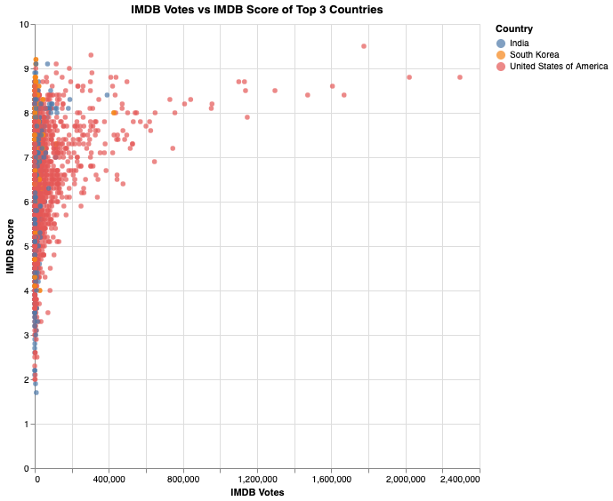

Box Plot

Description here!
Scatter Plot
Description here!
In the ever-evolving landscape of entertainment, streaming platforms have become the go-to destination for a diverse range of content. Among these, Netflix is a popular platform that provides a wide collection of TV series and movies to suit the diverse tastes of its global audiences. In this project, we want to analyze a collection of TV series and movies provided by a Netflix dataset, aiming to uncover the connection and impact of production origins and their released Netflix TV shows and movies.
More specifically, for every country in the dataset, we would like to find out its movies & TV show split, the trend in the number of released content each year, the average IMDB score of each genre, and so on. Through these data visualizations, we can compare between different countries. Hence, we can find the answer to the question of how TV shows and movies on Netflix produced by different countries differ in terms of attributes such as their show type, genres, IMDB score, IMDB votes, and so on.
The data we gathered comes from one source on Kaggle: Netflix TV Shows and Movies which has two files titles.csv and credits.csv, but we will only use titles.csv. It has 5850 rows and 15 features. This data set was created to list all movies and shows available on Netflix streaming, and analyze the data to find interesting facts. As of the recentness of data, the data was acquired in July 2022 containing data available in the US and it wass lastly updated a year ago. Using the raw data, we have engineered some additional features to easily represent them using visualization libraries.We also added natural earth country data and merged with our existing dataframe. The information about the features that were used in this visualization are listed in the following table:
| Variable Name | Details |
|---|---|
| Country | Country name |
| geometry | Geometry of country for drawing of map |
| type | Type of content |
| release_year | Release year of content |
| runtime | Runtime of content |
| genres | Geners of content (list) |
| production_countries | Production countries that produced content (list) |
| imdb_votes | Number of IMDB votes for content |
| imdb_score | IMDB score of content |
Description here!
Description here!
Description here!
Description here!
Description here!
Description here!